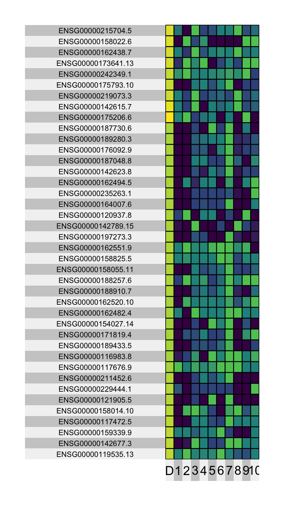
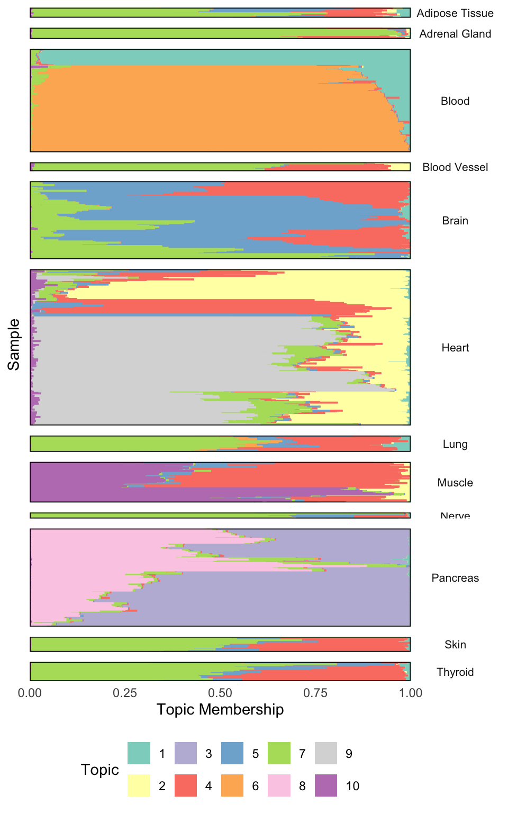

library(tidyverse)
library(superheat)
library(tidytext)
library(topicmodels)
theme479 <- theme_minimal() +
theme(
panel.grid.minor = element_blank(),
panel.background = element_rect(fill = "#f7f7f7"),
panel.border = element_rect(fill = NA, color = "#0c0c0c", size = 0.6),
legend.position = "bottom"
)
theme_set(theme479)Topic Modeling Case Study
An application to a gene expression dataset.
We have used text data analysis to motivate and illustrate the use of topic models. However, these models can be used whenever we have high-dimensional count data1. To illustrate this broad applicability, this lecture will consider an example from gene expression analysis.
The dataset we consider comes from the GTEX consortium. A variety of tissue samples have been subject to RNA-seq analysis, which measures how much of each type of gene is expressed within each sample. Intuitively, we relate,
- Documents → Tissue samples
- Words → Genes
- Word Counts → Gene expression levels
x <- read_csv("https://uwmadison.box.com/shared/static/fd437om519i5mrnur14xy6dq3ls0yqt2.csv")
x# A tibble: 2,000,000 × 6
sample gene tissue tissue_detail Description value
<chr> <chr> <chr> <chr> <chr> <dbl>
1 GTEX-NFK9-0926-SM-2HMJU ENSG0000… Heart Heart - Left… FGR 368
2 GTEX-OXRO-0011-R10A-SM-2I5EH ENSG0000… Brain Brain - Fron… FGR 593
3 GTEX-QLQ7-0526-SM-2I5G3 ENSG0000… Heart Heart - Left… FGR 773
4 GTEX-POMQ-0326-SM-2I5FO ENSG0000… Heart Heart - Left… FGR 330
5 GTEX-QESD-0526-SM-2I5G5 ENSG0000… Heart Heart - Left… FGR 357
6 GTEX-OHPN-0011-R4A-SM-2I5FD ENSG0000… Brain Brain - Amyg… FGR 571
7 GTEX-OHPK-0326-SM-2HMJO ENSG0000… Heart Heart - Left… FGR 391
8 GTEX-OIZG-1126-SM-2HMIU ENSG0000… Heart Heart - Left… FGR 425
9 GTEX-O5YW-0326-SM-2I5EI ENSG0000… Heart Heart - Left… FGR 172
10 GTEX-REY6-1026-SM-2TF4Y ENSG0000… Heart Heart - Left… FGR 875
# ℹ 1,999,990 more rowsThe goal here is to find sets of genes that tend to be expressed together, because these co-expression patterns might be indications of shared biological processes. Unlike clustering, which assumes that each sample is described by one gene expression profile, a topic model will be able to model each tissue sample as a mixture of profiles (i.e., a mixture of underlying biological processes).
As a first step in our analysis, we need to prepare a
DocumentTermMatrixfor use by the topicmodels package. Since the data were in tidy format, we can use thecast_dtmfunction to spreaed genes across columns. From there, we can fit an LDA model. However, we’ve commented out the code (it takes a while to run) and instead just download the results that we’ve hosted on Box.
x_dtm <- cast_dtm(x, sample, gene, value)
#fit <- LDA(x_dtm, k = 10, control = list(seed = 479))
#save(fit, file = "lda_gtex.rda")
f <- tempfile()
download.file("https://uwmadison.box.com/shared/static/ifgo6fbvm8bdlshzegb5ty8xif5istn8.rda", f)
fit <- get(load(f))- Let’s extract the tidy topic and memberships data. For the memberships, we will also join in the tissue from which each biological sample belonged.
tissue_info <- x %>%
select(sample, starts_with("tissue")) %>%
unique()
topics <- tidy(fit, matrix = "beta") %>%
mutate(topic = factor(topic))
memberships <- tidy(fit, matrix = "gamma") %>%
mutate(topic = factor(topic)) %>%
left_join(tissue_info, by = c("document" = "sample"))- We can now visualize the topics. Let’s consider the genes with the highest discrimination between topics, using the same discrimination score as in the previous notes. Each row in the heatmap below is a gene, and each column is a topic. The intensity of color represents the gene’s probability within the corresponding topic. Since only discriminative genes are shown, it’s not surprising that most genes are only active within a subset of topics.
discriminative_genes <- topics %>%
group_by(term) %>%
mutate(D = discrepancy(beta)) %>%
ungroup() %>%
slice_max(D, n = 400) %>%
mutate(term = fct_reorder(term, -D))
discriminative_genes %>%
pivot_wider(names_from = topic, values_from = beta) %>%
column_to_rownames("term") %>%
superheat(
pretty.order.rows = TRUE,
left.label.size = 1.5,
left.label.text.size = 3,
bottom.label.size = 0.05,
legend = FALSE
)
- Now, let’s see what tissues are related to which topics. We can use a structure plot. Before making the plot, we prepare the data appropriately. First, there are some tissues with very few samples, so we will filter those tissues away. Second, we will reorder the samples so that those samples with similar topic profiles are placed next to one another. This is accomplished by running a hierarchical clustering on the topic membership vectors and extracting the order of the resulting dendrogram leaves.
keep_tissues <- memberships %>%
count(tissue) %>%
filter(n > 70) %>%
pull(tissue)
hclust_result <- hclust(dist(fit@gamma))
document_order <- fit@documents[hclust_result$order]
memberships <- memberships %>%
filter(tissue %in% keep_tissues) %>%
mutate(document = factor(document, levels = document_order))- Next, we can generate the structure plot. The first three lines are the key lines: they create a stacked barchart for each sample and then facet across tissues. The remaining lines simply refine the appearance of the plot.
ggplot(memberships, aes(gamma, document, fill = topic, col = topic)) +
geom_col(position = position_stack()) +
facet_grid(tissue ~ ., scales = "free", space = "free") +
scale_x_continuous(expand = c(0, 0)) +
scale_color_brewer(palette = "Set3", guide = "none") +
scale_fill_brewer(palette = "Set3") +
labs(x = "Topic Membership", y = "Sample", fill = "Topic") +
theme(
panel.spacing = unit(0.5, "lines"),
strip.switch.pad.grid = unit(0, "cm"),
strip.text.y = element_text(size = 8, angle = 0),
axis.text.y = element_blank(),
)
- From this plot, we can see clearly that different tissues express different combinations of topics. For example, pancreas tissue typically expresses genes with high probability in topics 3 and 8. Further, within tissues, there can be differences in the types of genes expressed – certain blood cells are almost entirely summarized by topic 1, but most require some mixture of topics 1 and 6. Finally, we see that there are some topics that are common across several tissues. For example, topic 4 is key component of thyroid, skin, muscle, lung, and some brain tissue.
Footnotes
In fact, topic models are an example of a larger family of models, called mixed-membership models. All of these models generalize clustering, and different variants can be applied to other data types, like continuous, categorical, and network data.↩︎